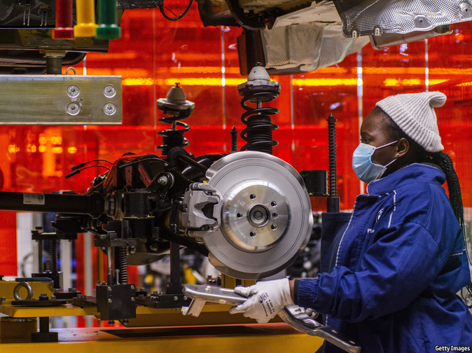

2021-05-09T14:30:38+00:00
【首文】经济发展
怎样让非洲工厂晋级
撒哈拉以南地区的工业革命未必是妄想
很少有建筑比通用汽车在格贝哈（Gqeberha，原伊丽莎白港[Port Elizabeth]）的旧工厂更能象征南非制造业的兴衰。在种族隔离时期，这家工厂因南非受到制裁和关税保护而免于国际竞争。如今它那些巨大的银白色装配车间里已空无一物。它于2017年关闭，是南非汽车工业的缩影，该行业在2009年至2017年间裁员近四分之一。这是整个非洲制造业普遍衰退的典型表现。1975年至2014年，撒哈拉以南非洲地区制造业占GDP的比重从19%下降到11%。
这种衰落有很多原因。在赞比亚等国家，企业都国有化了，被官僚们经营得一团糟。在像尼日利亚这样资源丰富的地方，出口石油或其他大宗商品导致本币估值过高，使得从国外进口商品比自己生产更便宜。上世纪90年代，随着非洲大陆大部分地区放开进口，本地制造商很难招架中国企业的攻势，后者通过规模压低成本，具有超强的竞争力。
2015年，哈佛大学的经济学家丹尼·罗德里克（Dani Rodrik）曾撰文探讨非洲“过早地去工业化”。非洲大陆似乎错失了一条提高生产率和创造就业的重要途径。有人担心，那条曾让数亿亚洲人爬出贫困沼泽地的梯子在非洲人刚踏上第一级时就被撤走了。到2035年前后，非洲加入劳动力大军的年轻人数量将超过世界其他地区的总和，因此，这种看法正确与否非常重要。
所幸，最新数据表明情况并非如此。撒哈拉以南非洲的制造业衰退在21世纪的头十年达到了最低点。自2010年以来，非洲工厂里的工人数量稳步上升。工厂产出也是如此。目前看来，对去工业化的担忧本身似乎倒是为时过早了。
许多非洲领导人如今渴望促进制造业的发展，一方面是为了避免依赖波动性强的大宗商品，另一方面是因为他们发现自己国家在疫情期间很难及时进口医疗用品，这非常令人沮丧。前事不忘，后事之师。这意味着要避免将企业国有化、补贴本国的领先企业，或提高进口壁垒以扶持本土产业。许多领导人明智地拥抱已于今年生效的覆盖整个非洲的自由贸易协定。它带来了希望：内陆国家卢旺达的床垫制造商更有可能通过赢得邻国刚果的订单来实现增长，而不是指望遥远的日本。
但是，仅仅靠政府不办坏事还不够。企业还需要可靠的电力、受过教育的工人和良好的基础设施来提高生产率。既然艰难的抉择不可避免，政府应该选择从大宗商品转向多元化投资。这意味着要建造港口，并从港口修建公路连接工业区，而不是连接位于不毛之地的矿山。一些政府正在为那些试图进入汽车制造等声名显赫的行业的企业提供税收优惠。它们或许应该关注更容易实现的目标，比如加工适合当地人口味的食品，或是为邻国制造包装材料等标准化产品。
如果基础设施和治理能够改善，更多的公司可能会选择在非洲建厂，使用当地供应商的零件为全球供应链制造部件。非洲的工业化不会和亚洲一个模样。境况并不相同，技术也已进步。但是认为非洲已经错失制造业良机的观点似乎是错误的。有了更好的政策，非洲企业就能找到出路。
2021-05-09T14:30:38+00:00
Economic development
How to promote African factories
A sub-Saharan industrial revolution need not be a pipe dream
FEW BUILDINGS symbolise the rise and fall of manufacturing in South Africa better than the old General Motors plant in Gqeberha (previously Port Elizabeth). During apartheid the factory was sheltered from international competition by sanctions and tariffs. Now its vast silvered assembly halls stand bare. It was closed in 2017, an emblem of South Africa’s car industry, which shed almost one in four jobs between 2009 and 2017. That is typical of a wider decline of manufacturing across the continent. In 1975-2014 manufacturing’s share of GDP in sub-Saharan Africa fell from 19% to 11%.
This collapse has plenty of causes. In countries such as Zambia, firms were nationalised and run into the ground by bureaucrats. In resource-rich places such as Nigeria exports of oil or other commodities led to an overvalued local currency, making it cheaper to import things than make them. As much of the continent opened up to imports in the 1990s, manufacturers struggled to hold their own against hyper-competitive Chinese firms with the scale to drive down costs.
In 2015 Dani Rodrik, an economist at Harvard, wrote of “premature deindustrialisation” in Africa. The continent seemed to be missing out on an important means of boosting productivity and creating jobs. The ladder that hundreds of millions of Asians had climbed up out of poverty had been taken away just as Africans were putting a foot on the first rung, some feared. Since by around 2035 there will be more young people joining the workforce in Africa than in the rest of the world combined, it matters whether this idea is right.
Thankfully, newer data suggest it is not. Sub-Saharan Africa’s manufacturing slump bottomed out in the 2000s. Since 2010 the number of workers in African factories has steadily risen. So has factory output. Worries about deindustrialisation now look as if they are premature.
Many African leaders are eager to promote manufacturing, partly to avoid dependence on volatile commodities and partly because their countries have found it so frustratingly hard to import medical supplies quickly enough during the pandemic. To get the best results, they should start by learning from past failures. That means avoiding nationalising companies, subsidising national champions or raising import barriers to cosset home-grown industries. Many leaders are wisely embracing a continent-wide free-trade agreement that came into force this year. It offers hope: a mattress-maker in landlocked Rwanda is more likely to grow by winning orders in next-door Congo than in far-off Japan.
Yet it is not enough for African governments to do no harm. Companies also need reliable power, educated workers and good infrastructure to improve productivity. Since hard choices are inevitable, governments should pick investments that diversify away from commodities. This would mean building ports with roads to industrial areas rather than to mines in the middle of nowhere. Some governments are giving tax incentives to companies in a bid to break into prestigious industries like carmaking. They might do better to focus on easier targets, such as processing food for local stomachs, or making dull products like packaging for neighbouring countries.
If infrastructure and governance improve, more firms may choose to build factories in Africa to make components for global supply chains using parts from local suppliers. Industrialisation in Africa will not look the same as it did in Asia. Circumstances are different, and technology has moved on. But the notion that Africa has missed out on manufacturing seems to be mistaken. With better policies, its firms can find a path. ■
2021-05-09T14:30:38+00:00
【首文】經濟發展
怎樣讓非洲工廠晉級
撒哈拉以南地區的工業革命未必是妄想
很少有建築比通用汽車在格貝哈（Gqeberha，原伊麗莎白港[Port Elizabeth]）的舊工廠更能象徵南非製造業的興衰。在種族隔離時期，這家工廠因南非受到制裁和關稅保護而免於國際競爭。如今它那些巨大的銀白色裝配車間里已空無一物。它於2017年關閉，是南非汽車工業的縮影，該行業在2009年至2017年間裁員近四分之一。這是整個非洲製造業普遍衰退的典型表現。1975年至2014年，撒哈拉以南非洲地區製造業佔GDP的比重從19%下降到11%。
這種衰落有很多原因。在贊比亞等國家，企業都國有化了，被官僚們經營得一團糟。在像尼日利亞這樣資源豐富的地方，出口石油或其他大宗商品導致本幣估值過高，使得從國外進口商品比自己生產更便宜。上世紀90年代，隨着非洲大陸大部分地區放開進口，本地製造商很難招架中國企業的攻勢，後者通過規模壓低成本，具有超強的競爭力。
2015年，哈佛大學的經濟學家丹尼·羅德里克（Dani Rodrik）曾撰文探討非洲“過早地去工業化”。非洲大陸似乎錯失了一條提高生產率和創造就業的重要途徑。有人擔心，那條曾讓數億亞洲人爬出貧困沼澤地的梯子在非洲人剛踏上第一級時就被撤走了。到2035年前後，非洲加入勞動力大軍的年輕人數量將超過世界其他地區的總和，因此，這種看法正確與否非常重要。
所幸，最新數據表明情況並非如此。撒哈拉以南非洲的製造業衰退在21世紀的頭十年達到了最低點。自2010年以來，非洲工廠里的工人數量穩步上升。工廠產出也是如此。目前看來，對去工業化的擔憂本身似乎倒是為時過早了。
許多非洲領導人如今渴望促進制造業的發展，一方面是為了避免依賴波動性強的大宗商品，另一方面是因為他們發現自己國家在疫情期間很難及時進口醫療用品，這非常令人沮喪。前事不忘，後事之師。這意味着要避免將企業國有化、補貼本國的領先企業，或提高進口壁壘以扶持本土產業。許多領導人明智地擁抱已於今年生效的覆蓋整個非洲的自由貿易協定。它帶來了希望：內陸國家盧旺達的床墊製造商更有可能通過贏得鄰國剛果的訂單來實現增長，而不是指望遙遠的日本。
但是，僅僅靠政府不辦壞事還不夠。企業還需要可靠的電力、受過教育的工人和良好的基礎設施來提高生產率。既然艱難的抉擇不可避免，政府應該選擇從大宗商品轉向多元化投資。這意味着要建造港口，並從港口修建公路連接工業區，而不是連接位於不毛之地的礦山。一些政府正在為那些試圖進入汽車製造等聲名顯赫的行業的企業提供稅收優惠。它們或許應該關注更容易實現的目標，比如加工適合當地人口味的食品，或是為鄰國製造包裝材料等標準化產品。
如果基礎設施和治理能夠改善，更多的公司可能會選擇在非洲建廠，使用當地供應商的零件為全球供應鏈製造部件。非洲的工業化不會和亞洲一個模樣。境況並不相同，技術也已進步。但是認為非洲已經錯失製造業良機的觀點似乎是錯誤的。有了更好的政策，非洲企業就能找到出路。